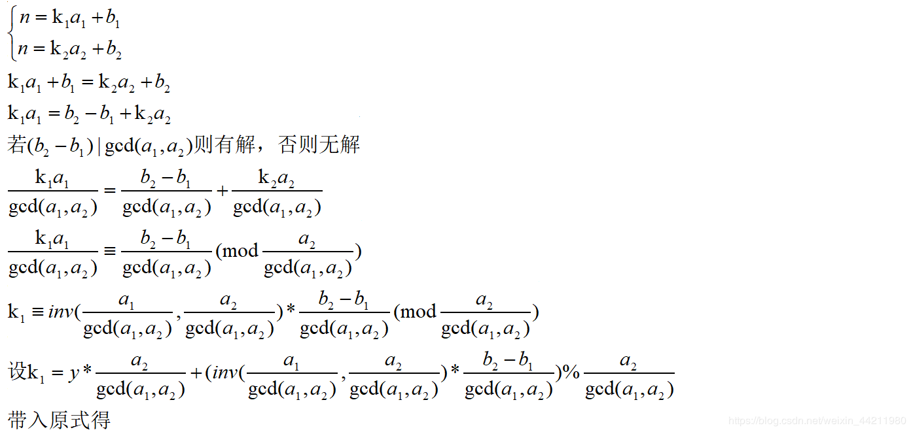
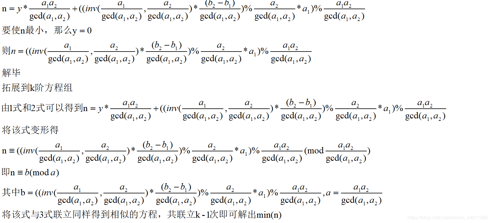

欧几里得算法
描述
欧几里德算法又称辗转相除法，是指用于计算两个正整数a，b的最大公约数。其公式为$gcd(a, b) = gcd(b, a \bmod b)$
证明
证明如下：
不妨设$a > b$，$gcd(a, b)=n$
$a = k_{1}n$，$b = k_{2}n$
那么$a - b = (k_{1} - k_{2}) \times n$
易得$gcd(a, b) = gcd(b, a - b)=gcd(b, a - 2b)=…=gcd(b, a \bmod b)$
Code
1 | typedef long long ll; |
拓展欧几里得算法
描述
找到最小的$x$和$y$使得式子$ax + by = gcd(a, b)$成立
求解
不妨设$x > y$
若有$ax + by = gcd(a, b)$
必有$bx_{1} + (a \bmod b)y_{1}=gcd(b, a \bmod b) = gcd(a, b)$
$bx_{1} + (a - [\frac{a}{b}] \times b)y_{1} = gcd(a, b)$
$bx_{1} + ay_{1} - [\frac{a}{b}] \times b \times y = gcd(a, b)$
$ay_{1} + (x_{1} - [\frac{a}{b}] \times y_{1})b=gcd(a, b)=ax+by$
那么显然存在解$x = y_{1}, y = x_{1} - [\frac{a}{b}] \times y_{1}$
这样就可以对式子进行递归求解了，边界条件为$b = 0$时$x_{k}=1, y_{k}=0$
如果你不希望解出现负数的话，可以使用下面的式子进行处理
$x = (x + b) \bmod b \qquad y = (y + a) \bmod a$
Code
1 | typedef long long ll; |
拓展1
找到最小的$x$和$y$使得式子$ax + by = c$成立
不妨设$gcd(a, b)=n$
$a = k_{1}n$，$b = k_{2}n$
那么上式即为$k_{1}n \times x + k_{2}n \times y = c$
很显然上式有解的充要条件为$n|c$
我们考虑$ax + by = gcd(a, b)$的最小解为$x和y$
那么$\frac{c}{gcd(a, b)} \times (ax’ + by’) = \frac{c}{gcd(a, b)} \times gcd(a, b)$
令$x = \frac{c}{gcd(a, b)} \times x’$，$y = \frac{c}{gcd(a, b)} \times y’$
显然x和y为$ax + by = c$的最小解
拓展2
若$ab + kp = 1$，即$a \times b \equiv 1 \pmod p$，那么根据拓展欧几里得算法求解出来的$b$即为$a$在模$p$意义下的乘法逆元
中国剩余定理
描述
中国剩余定理又称孙子定理，中国南北朝时期（公元5世纪）的数学著作《孙子算经》卷下第二十六题，叫做“物不知数”问题，原文如下：
“今有物不知其数，三三数之剩二，五五数之剩三，七七数之剩二，问物几何？”
意思就是有一个数除3余2，除5余3，除7余2，问你这个数是多少
这类问题在数论中我们把它称作一元线性同余方程组问题，数学公式表述如下：
$x \equiv {a_{1}} \pmod {m_{1}}$
$x \equiv {a_{2}} \pmod {m_{2}}$
$…$
$x \equiv {a_{n}} \pmod {m_{n}}$
其中$m_{1}, m_{2}, …, m_{n}两两互质$
求x的最小非负整数解
求解
令$M=\prod_{i=1}^{n}m_{i}$，即$M=lcm(m_{1}, m_{2}, …, m_{n})$
设$t_{i}$为$\frac{M}{m_{i}}t_{i} \equiv {1} \pmod {m_{i}}$的最小非负整数解
那么$x = \sum_{i=1}^{m_{i}}a_{i}\frac{M}{m_{i}}t_{i}$为同余方程组的最小非负整数解
而$t_{i}$显然为$\frac{M}{m_{i}}t_{i} \equiv {1} \pmod {m_{i}}$关于$m_{i}$的逆元（因为$\frac{M}{m_{i}}t_{i} \equiv {1} \pmod {m_{i}}$）
证明
将$x$带入到第$k$个方程中
对于$\forall i \neq k$，$a_{i}\frac{M}{m_{i}}t_{i} \equiv {0} \pmod {m_{k}}$，因为$\frac{M}{m_{i}} \bmod m_{k} = 0$
对于$i = k$，由于$\frac{M}{m_{i}}t_{i} \equiv {1} \pmod {m_{i}}$，那么自然$a_{i}\frac{M}{m_{i}}t_{i} \equiv {a_{i}} \pmod {m_{k}}$，即得证
Code
1 | typedef long long ll; |
拓展中国剩余定理
描述
$x \equiv {a_{1}} \pmod {m_{1}}$
$x \equiv {a_{2}} \pmod {m_{2}}$
$…$
$x \equiv {a_{n}} \pmod {m_{n}}$
不保证$m_{1}, m_{2}, …, m_{n}两两互质$
求x的最小非负整数解
求解


Code
1 | typedef long long ll; |
参考
1.中国剩余定理与扩展中国剩余定理-csdn
https://blog.csdn.net/enjoy_pascal/article/details/98521475
2.孙子定理-百度百科
https://baike.baidu.com/item/%E5%AD%99%E5%AD%90%E5%AE%9A%E7%90%86/2841597
3.拓展欧几里得算法-简书
https://www.jianshu.com/p/9d60995a0e89